目 次
はじめに 旅が変える、人生の優先順位
第1章 旅が教えてくれた「優先順位」の本当の意味
第2章 旅で出会う「時間の使い方」革命
第3章 旅が変える「人間関係」の選び方
第4章 旅で磨かれる「決断力」と「自己信頼」
第5章 旅から帰った後の「人生の再設計」
おわりに 旅を続けるために
科学と体験が証明する、今すぐ旅を最優先にすべき理由
01はじめに
「いつか行こう」と思い続けているうちに、気がつけば何年も経っていた。
そんな経験はないでしょうか。
ヨーロッパの古い街並みを歩いてみたい。
東南アジアの市場でローカルフードを食べてみたい。
国内でも、まだ訪れていない絶景スポットが山ほどある。
頭の中には行きたい場所のリストが積み重なっているのに、いつも「今じゃない」という言葉が口をついて出てしまう。
仕事が落ち着いたら。
お金が貯まったら。
子どもが大きくなったら。
そうやって「いつか」を繰り返しながら、旅行は人生の優先リストで少しずつ後回しにされていく。
しかし、本書を読み終えるころには、あなたはきっと確信を持つはずです。
旅行こそ、人生で最も優先すべきことのひとつだと。
それは感情論でも精神論でもありません。
脳科学、ポジティブ心理学、幸福度研究——これらの科学が明確に示している事実です。
旅行経験者と非経験者では、幸福感・ウェルビーイング・人生満足度のすべてにおいて、統計的に有意な差が生まれます。
韓国の漢陽大学が1000人を対象に行った研究では、最近3カ月以内に旅行した人の幸福感は6.6点（10点満点）だったのに対し、旅行しなかった人は5.62点でした。
この差は偶然ではありません。
旅行が人間の脳と心に与えるメカニズムは、科学によって解き明かされています。
本書では、なぜ旅行が人生を豊かにするのか、その科学的根拠を丁寧に解説します。
そして「お金がない」「時間がない」「なかなか行けない」というよく聞かれる理由が、実は思い込みに過ぎないことも示します。
さらに、今日から旅行を人生の最優先事項として組み込むための、具体的な実践戦略もお伝えします。
人生100年時代と言われる今、私たちは生涯に使える時間と健康の総量を意識しながら、何に優先的に投資するかを選択しなければなりません。
旅行はそのなかで最高の投資対象のひとつです。
さあ、ページをめくりながら、あなたの「いつか」を「今」に変えていきましょう。
02第1章 脳と心が証明する「旅行の力」
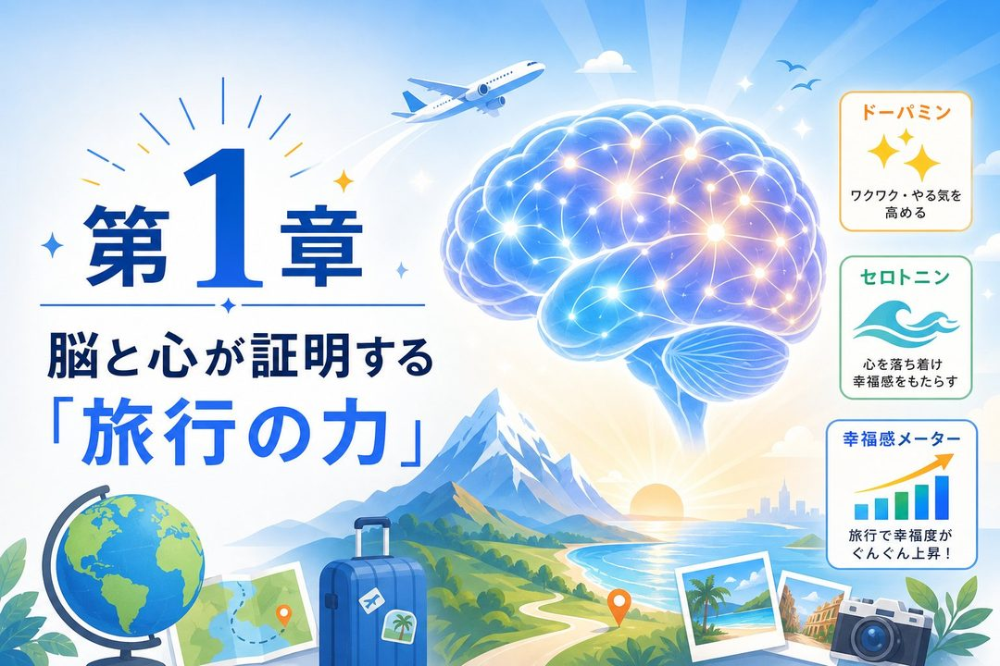
第1章：脳と心が証明する「旅行の力」
旅行経験者と非経験者では「幸福度」が明確に違う
旅行は人を幸せにする——これは感覚的にわかることですが、実は科学的にも証明されています。
韓国の漢陽大学観光研究所が実施した調査は、その証拠として非常に説得力があります。
全国の成人1000人を対象に、最近3カ月以内に旅行した人（800人）とそうでない人（200人）を比較した結果、すべての指標で旅行経験者が大幅に上回りました。
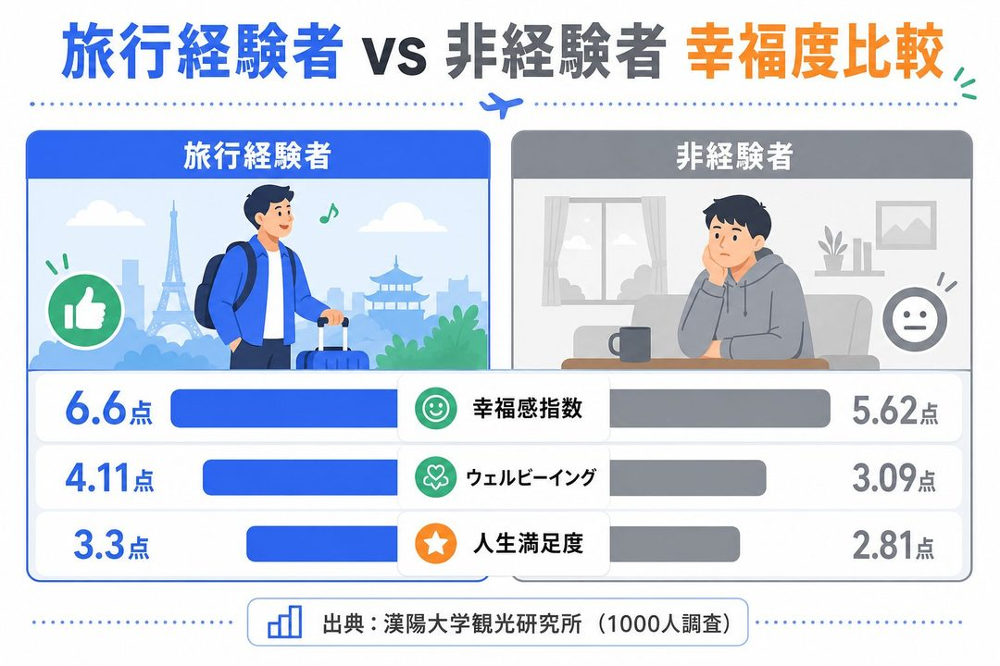
旅行経験者 vs 非経験者 幸福度比較
幸福感指数は6.6点対5.62点、主観的ウェルビーイングは4.11点対3.09点、人生満足度は3.3点対2.81点。
どの数値を見ても、旅行をしている人のほうが人生をより豊かに生きていることがわかります。
さらに驚くべき発見があります。
旅行満足度が1段階上がるごとに、人生満足度が平均0.29点上昇するという相関関係が明らかになったのです。
つまり、旅行の「質」を高めるほど、人生全体の満足度が底上げされていく。
旅行は単なる余暇活動ではなく、人生の質そのものを変える力を持っているということです。
また、旅行後に体験を共有する頻度も重要な要因でした。
写真や感想を「非常によく共有する」人の人生満足度は3.91点だったのに対し、「あまり共有しない」人は2.87点と大きな差がありました。
研究チームは「旅行そのものより、後から振り返る過程で肯定的な感情が強化される」と指摘しています。
旅行の記憶は、時間が経っても人生の満足度を支え続けてくれるのです。
旅行計画を立てるだけで幸せになれる
「旅行に行くお金も時間もないから、幸福度なんて上がるわけない」と思う人もいるでしょう。
しかし、ここに面白い事実があります。
旅行を計画するだけで、脳は幸福を感じ始めるのです。
オランダの研究グループが行った調査によれば、旅行の8週間前から幸福感が高まるという結果が報告されています。
これは旅行中や旅行後ではなく、旅行を「計画している段階」から幸福度が上昇し始めるということを意味しています。
そのメカニズムは脳内のドーパミンにあります。
ドーパミンは「報酬物質」とも呼ばれ、何かを期待したり、楽しみなことを想像したりするときに分泌されます。
旅行先のことを調べ、ホテルを予約し、持ち物リストを作る——こうした「旅の準備」の一つひとつが、脳にとっての報酬体験となり、ドーパミンの分泌を促進するのです。
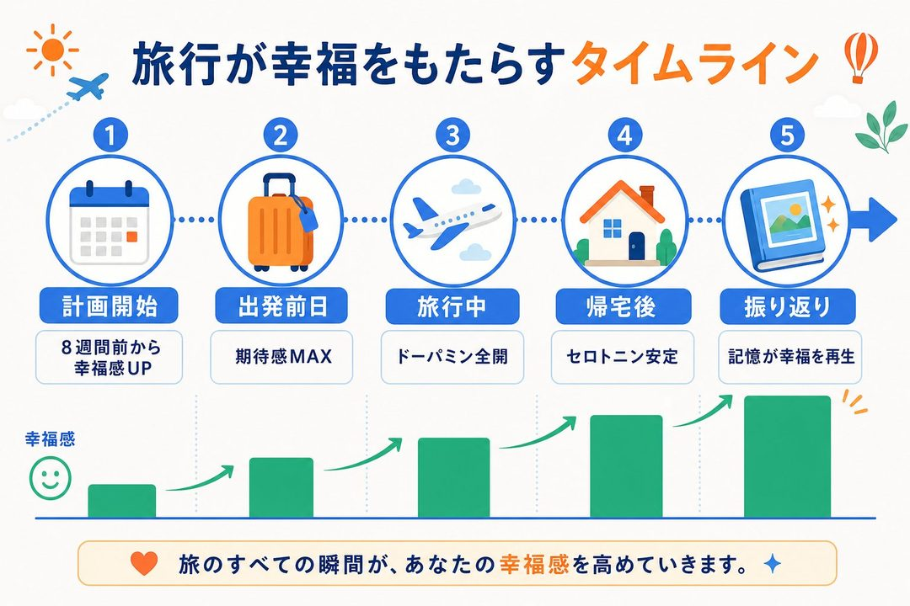
旅行が幸福をもたらすタイムライン
つまり、旅行の恩恵は「実際に旅に出た瞬間」だけに限定されません。
計画を立て始めた瞬間から、旅中を経て、帰宅後に思い出を振り返るまで——旅行は非常に長い時間をかけて、継続的に幸福感をもたらしてくれるのです。
言い換えれば、今すぐ旅行の計画を立てることが、今日から幸せを増やす最もシンプルな方法のひとつです。
旅行が「脳」を活性化させる3つのメカニズム
旅行が脳に与える影響は、ドーパミンだけにとどまりません。
脳科学の視点から見ると、旅行は少なくとも3つの異なるメカニズムで脳を活性化させます。
メカニズム1: 前頭葉が鍛えられる
旅行中、私たちは次々と意思決定を迫られます。
「どのルートで行くか」「どのレストランを選ぶか」「突然のハプニングにどう対処するか」——これらの「選択・判断・系列化」の繰り返しが、脳の司令塔である前頭葉を強力に刺激します。
特に注目すべきは、個人旅行の場合にこの効果が顕著になるという点です。
パッケージツアーと違い、個人旅行では「すべてを自分で決める」必要があります。
その分だけ前頭葉への刺激が強くなり、脳が活性化されやすくなります。
メカニズム2: セロトニンで心が安定する
「幸せホルモン」とも呼ばれるセロトニンは、旅行中に分泌量が増加することがわかっています。
セロトニンの分泌量が多いと、心が落ち着き、ストレスが和らぎ、精神的な安定感が高まります。
日常生活から一時的に解放されることで、慢性的な緊張状態が解除され、セロトニンが分泌されやすい状態になるのです。
「旅行から帰ってくるとなぜかスッキリしている」という感覚は、このセロトニン効果によるものです。
メカニズム3: 新奇性がドーパミンを解放する
人間の脳は「新しいもの」に強く反応します。
初めて見る景色、聞いたことのない言語、嗅いだことのない食べ物の香り——旅行はまさに「新奇性の塊」です。
こうした新しい刺激が次々と入ってくることで、脳は常に高い関心と興奮の状態を保ちます。
これが「旅行中はなんとなく時間の流れが違う」と感じる理由であり、脳が最も生き生きと活動している証拠でもあります。
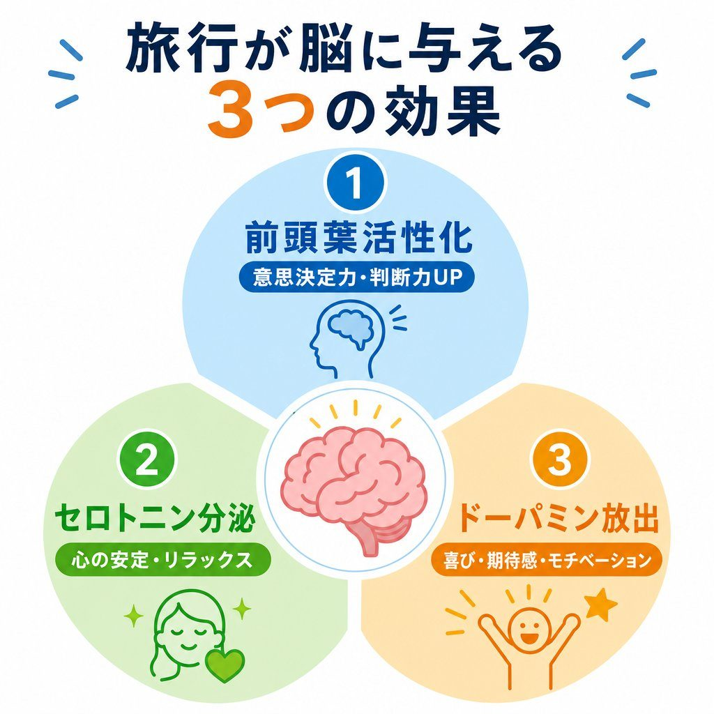
旅行が脳に与える3つの効果
「ヘドニア」より「ユーダイモニア」——旅行がもたらす深い幸福
幸福には2種類あることを、ポジティブ心理学は教えてくれます。
ひとつはヘドニア（快楽的幸福）。
美味しいものを食べたときの喜び、豪華ホテルに泊まったときの満足感など、感覚的な快楽に基づく幸福です。
これは強烈な喜びをもたらしますが、時間とともに慣れてしまい、持続しにくいという特徴があります。
もうひとつはユーダイモニア（意味的幸福）。
成長・意味・つながりの追求によって生まれる幸福です。
「自分は確かに成長している」「この経験には深い意味がある」「誰かと深くつながれた」という感覚から生まれるこの幸福は、長期的な幸福感とレジリエンス（回復力）に直結します。
旅行は、この2種類の幸福を同時にもたらすことができる数少ない体験のひとつです。
美しい景色やグルメという「ヘドニア」的な楽しさを持ちながら、異文化との出会いや自己挑戦という「ユーダイモニア」的な成長をも与えてくれます。
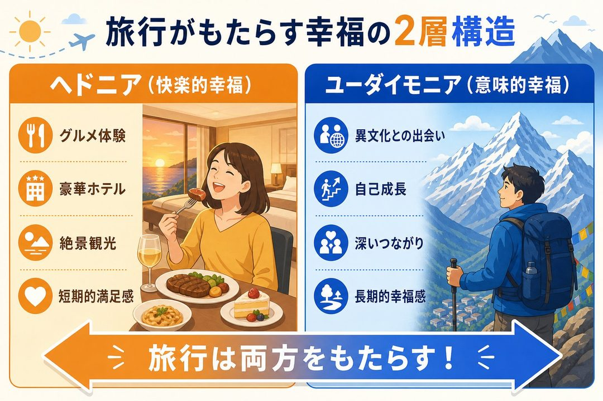
旅行がもたらす幸福の2層構造
ポジティブ心理学の視点では、より充実した旅行体験を得るためには「ユーダイモニア」的な要素を意識的に組み込むことが重要とされています。
現地の料理教室に参加する、地元の人と交流する、職人の作業を体験する——こうした「価値共創」体験が、自律性・有能感・関係性という3つの心理的ニーズを満たし、旅行後も長く続く幸福感をもたらすのです。
旅行は「最高のコスパ投資」である
ここまでの科学的根拠を踏まえると、旅行はお金の使い方として非常に合理的な「投資」であると言えます。
行動経済学の研究では、人間はモノへの支出よりも体験への支出のほうが、長期的な幸福感が高いことが繰り返し証明されています。
新しいスマートフォンや車、ブランドバッグの喜びは時間とともに薄れていきます。
しかし旅行の思い出は、何年経っても鮮明に蘇り、その都度幸福感をもたらしてくれます。
脳科学的にも、感情を伴う「エピソード記憶」は長期記憶として定着しやすく、繰り返し思い出すことで幸福感を再生できます。
旅行の記憶は文字通り「心の財産」として蓄積されていくのです。
モノは劣化しますが、体験の記憶は劣化しません。
むしろ時間が経つほど「美しい記憶」として昇華されていく傾向さえあります。
これが旅行という投資の最大の特徴です。
03第2章 旅が変える「あなた自身」
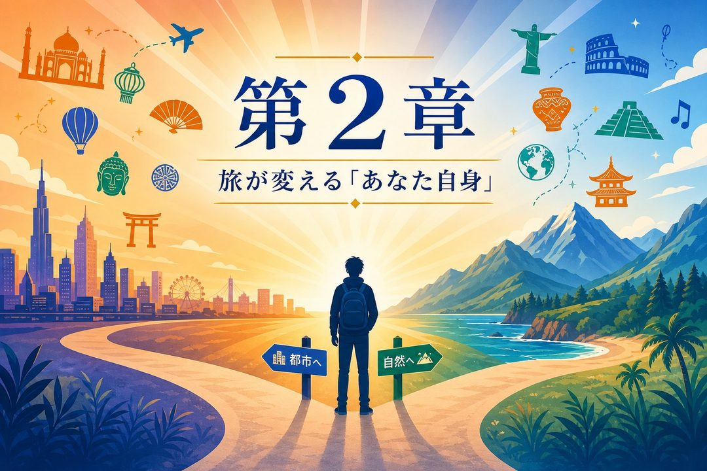
第2章：旅が変える「あなた自身」
価値観の変化は「劇的」ではなく「積み重ね」でやってくる
旅行で人生が変わる——そう聞いて、多くの人は「何か劇的な出来事があったのだろう」と想像します。
しかし実際には、旅行による変化のほとんどは、小さな経験の積み重ねによって少しずつもたらされます。
旅行コンサルタントの今井浩恵氏は、長年の旅行経験を振り返ってこう述べています。
「雷に打たれるような経験をしたことはなく、価値観が180度変わるような出来事に出会ったこともない。
むしろ旅で得たのは、小さな積み重ねの連続です」。
フランスへの初旅行で「異国の香り」を嗅いだとき、その世界の多様性に初めて気づいた。
ラオスの片田舎で地元の人の善意に触れたとき、「旅は誰かの善意でできている」という感覚が芽生えた。
こうした一見ちいさな体験が、長い時間をかけて積み重なり、気がつけば以前とは違う自分になっている。
これは実は、とても重要な視点です。
「旅行で人生が変わらなかった」と感じる人の多くは、劇的な変化を期待しすぎているのかもしれません。
旅行の変化は、じっくりと、少しずつ、確実に起きていきます。
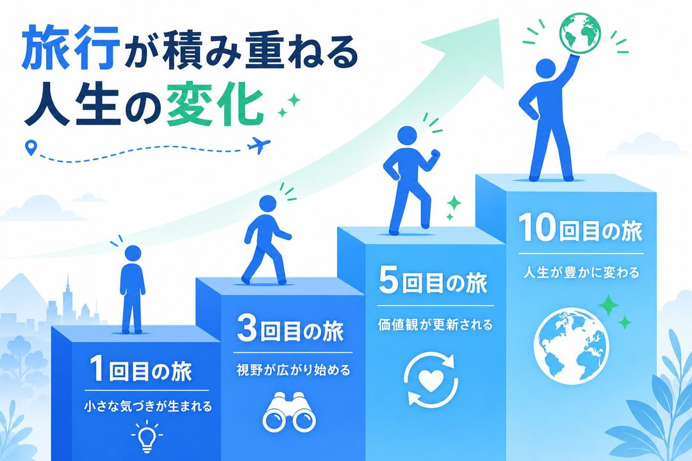
旅行が積み重ねる人生の変化
旅行が育む「寛容さ」という最強の武器
旅に出ると、私たちは数えきれないほどの「違い」に出会います。
言葉が違う。
食事の仕方が違う。
時間の感覚が違う。
ビジネスのやり方が違う。
人と人の距離感が違う。
最初はこの「違い」に戸惑い、不快感を覚えることもあるでしょう。
しかしこの「ヒリヒリした感覚」こそが、価値観が拡張されるサインです。
異なる「普通」に繰り返し触れることで、私たちは次第に「自分の常識は世界の一部に過ぎない」という認識を持つようになります。
電車の中でも大きな声で会話するのが当たり前の文化がある。
商店が突然閉まっても誰も気にしない社会がある。
時刻通りにバスが来ることを誰も期待していない国がある。
こうした多様な「普通」に触れることで、私たちは自然と寛容になっていくのです。
「電車が5分遅れた」「レストランのサービスが少し遅い」「コンビニに行ったら目当ての商品がなかった」——旅行経験を積んだ人は、こうした日常の些細なことに対して、以前ほど大きなストレスを感じなくなります。
なぜなら、「完璧でない」ことが世界のデフォルトだと知っているから。
職場での人間関係も変わります。
「この人はこういう考え方なんだ」と、異なる価値観を持つ同僚や上司を、以前より自然に受け入れられるようになる。
これは、旅行がもたらす最も実用的な変化のひとつです。
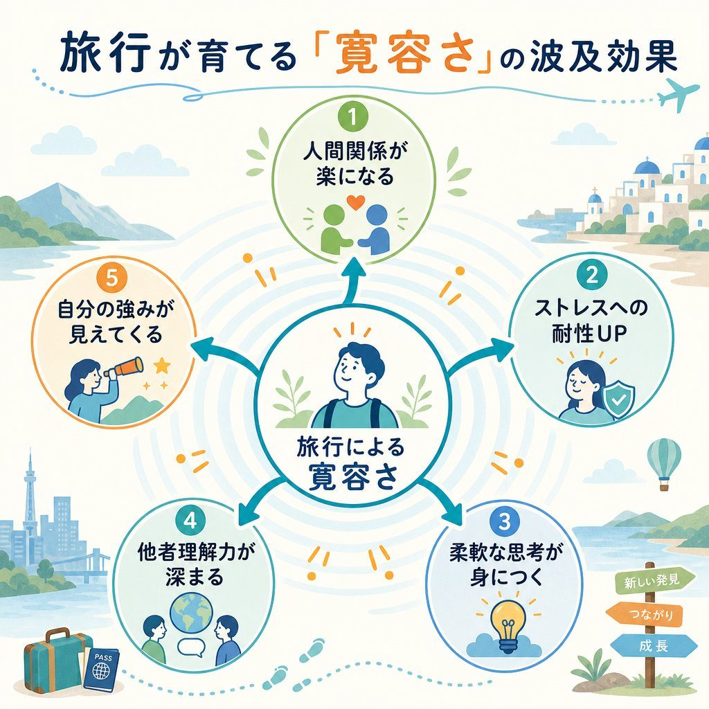
旅行が育てる「寛容さ」の効果
自己解決能力と適応力が格段に上がる
旅行中、特に海外旅行では、「困った状況」が必ず起きます。
電車を乗り間違えた。
ホテルの予約が確認できない。
言葉が通じない店でどうしても注文しなければならない。
財布を忘れて宿に戻った。
予定していたスポットが臨時休業だった——こうしたハプニングは、旅行者にとって日常茶飯事です。
しかしこれらの「困った状況」こそ、実は最高の学習機会です。
旅行中に問題を解決するたびに、私たちは「なんとかできた」という自己効力感を積み上げていきます。
自己効力感とは、「自分にはこの問題を解決できる」という確信のこと。
ポジティブ心理学ではこれがレジリエンス（逆境からの回復力）の根幹をなすとされています。
旅行中のハプニングを乗り越えるたびに、この自己効力感が少しずつ高まっていく。
その結果、旅行から帰ってきた後も、日常生活のさまざまな困難に対して「なんとかなるだろう」という楽観的な姿勢で向き合えるようになります。
仕事でのトラブル、人間関係の摩擦、予期せぬ出費——旅行を繰り返してきた人は、こうした状況にも冷静に対処できる「しなやかさ」を身につけているのです。
認知的柔軟性と創造性が高まる
異文化体験は、私たちの「ものの見方」そのものを変えます。
心理学では、これを認知的柔軟性と呼びます。
同じ問題を複数の角度から見ることができる能力のことです。
旅行によって異なる文化・価値観・思考回路に触れることで、この認知的柔軟性が高まることが研究で示されています。
たとえば、日本では「時間を守ること」が最重要マナーのひとつとされています。
しかしラテン系の文化圏では、時間に対するとらえ方がまったく異なります。
「約束の時間より少し遅れることが当たり前」という文化に実際に触れることで、時間管理に対する新しい視点が生まれます。
もちろん日本式の時間厳守を否定するわけではありません。
ただ「違う考え方もある」と知ることで、思考の幅が広がるのです。
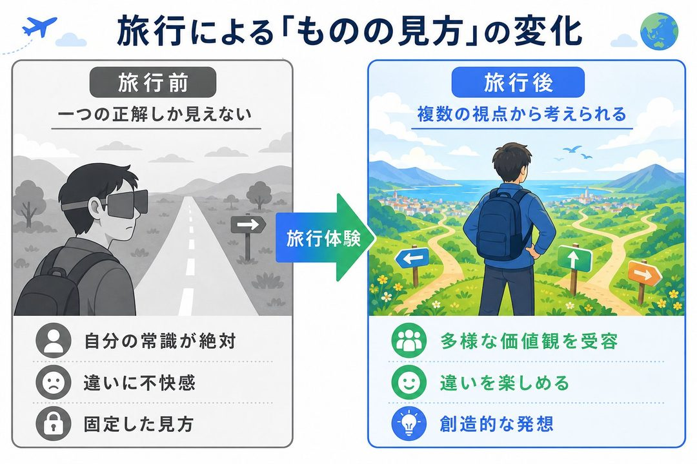
旅行による「ものの見方」の変化
この認知的柔軟性は、創造性とも深く結びついています。
クリエイティブな仕事をする人々が旅行を重視する理由はここにあります。
新しい視点、新しいインスピレーション、思いもよらないアイデアの組み合わせ——旅行は脳に「新しい結合」を生み出す絶好の機会なのです。
ビジネスの世界でも、多様な文化背景を持つ人材が「イノベーション」の源泉になると言われています。
旅行という「プチ異文化体験」を積み重ねることで、ビジネスパーソンとしての創造力も自然と高まっていきます。
旅行は「本当の自分」を教えてくれる
日常生活の中では、私たちは多くの役割を演じています。
会社員として、親として、子として、友人として——それぞれの場で「期待される自分」を演じ続けることが習慣化してしまうと、「本当の自分が何を求めているのか」がわからなくなってくることがあります。
旅行は、そんな日常のしがらみから一時的に解放される時間です。
一人旅に出ると、特にこの効果が際立ちます。
誰にも気をつかわず、自分の興味だけに従って行動できる。
「ここは2時間見ていたい」と思えば2時間いられる。
「美術館より市場がいい」と思えば市場に行ける。
「今日は何もしたくない」と思えばカフェで1日本を読んでいられる。
こうした「自分だけの時間」の中で、「自分はこういうものに心を動かされるんだ」「これが好きで、これが嫌いなんだ」という、自己理解が深まっていきます。
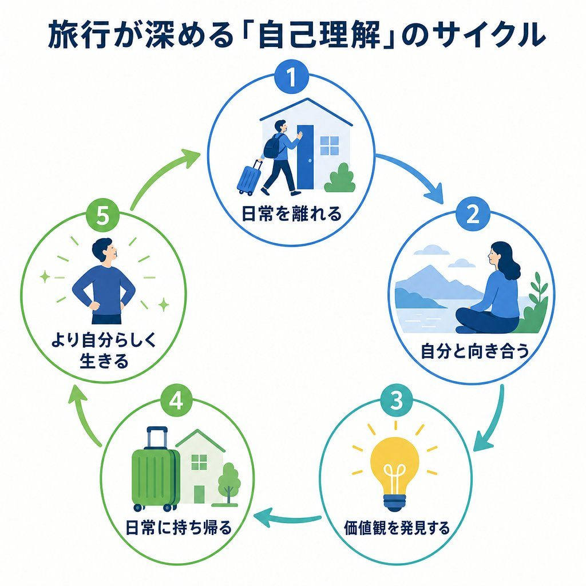
旅行が深める「自己理解」のサイクル
多くの旅行者が口にする「旅行から帰ってくると、何か大切なものが見えてくる」という感覚は、まさにこの自己理解の深まりによるものです。
仕事に追われる日常では気づけなかった「自分が本当にやりたいこと」「今の生活で足りていないもの」が、旅行という非日常の中でくっきりと浮かび上がってくるのです。
旅行が人間関係を深める
誰かと一緒に旅行した経験を持つ人なら、「旅行後に関係が深まった」という感覚を持ったことがあるのではないでしょうか。
これには心理学的な理由があります。
共に非日常を体験し、困難を乗り越え、感動を分かち合う——これらの体験は、通常の日常的なコミュニケーションでは得られない「深い絆」を生み出します。
パートナーや家族との旅行は、普段では見せない一面を互いに見せ合うことで、関係性を新たなステージへと導きます。
友人との旅行は、友情をより強固なものにします。
同僚との旅行は、職場での関係性を超えた人間的なつながりを作ります。
旅行は「時間の圧縮装置」とも言えます。
数日の旅行が、何年もの日常的な付き合いに匹敵する深さの絆を生み出すことがあります。
それだけ、旅行という非日常体験は人と人をつなぐ力が強いのです。
04第3章 「行けない理由」を一つひとつ解消する
第3章：「行けない理由」を一つひとつ解消する
旅行に行けない理由ランキングと「本当の理由」
旅行に行けない理由として、多くの人が挙げるのは大きく3つです。
- お金がない
- 時間がない
- きっかけがない（一人では不安、誰かを誘えない、決断できない）
しかし実は、これらの多くは思い込みによる「言い訳」であることが多いのです。
もちろん、本当にお金が足りない状況は存在します。
本当に休暇が取れない職場環境もあります。
それを否定するつもりはありません。
しかし、多くの場合、「行けない」のではなく「行く優先順位が低い」という状態であることを、まず認識することが重要です。
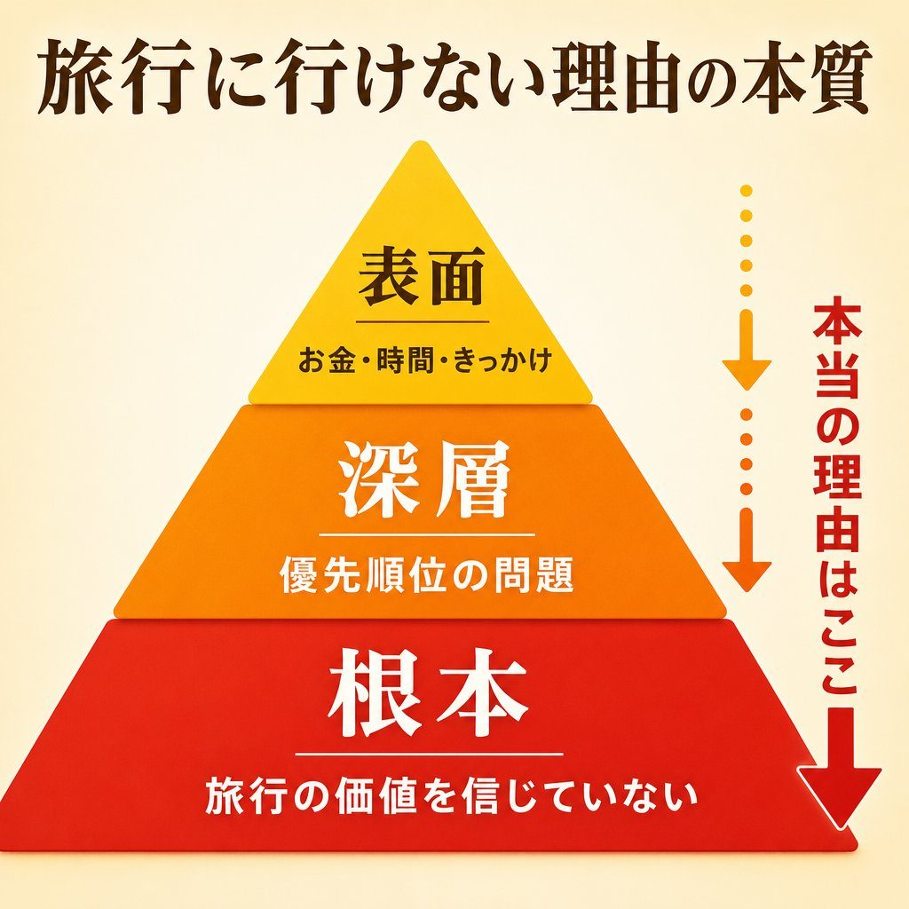
旅行に行けない理由の本質
TimeTreeが2023年に行った調査で、「一生でやりたいこと」の第1位が「旅行」だったにもかかわらず、「やれずに後悔したこと」のランキングには旅行が上位に入ってくることが示されています。
人々は旅行をしたいと思いながら、結局できないまま後悔している——この矛盾を生み出しているのが「優先順位の問題」です。
「お金がない」という思い込みを崩す
旅行にかかるお金は、想像しているより少ない場合がほとんどです。
まず、旅行の形はさまざまです。
海外旅行である必要はありません。
近場への日帰り旅行でも、旅行がもたらす脳科学的効果は十分に得られます。
前章で解説したドーパミン・セロトニン効果は、「非日常を体験する」ことで生まれます。
それは必ずしも遠い外国である必要はないのです。
国内旅行であれば、交通費と宿泊費を工夫することで、かなりコストを抑えられます。
早期予約割引を活用する、平日に旅行する、ポイントやマイルを使う——こうした工夫だけで、旅行費用は大幅に下がります。
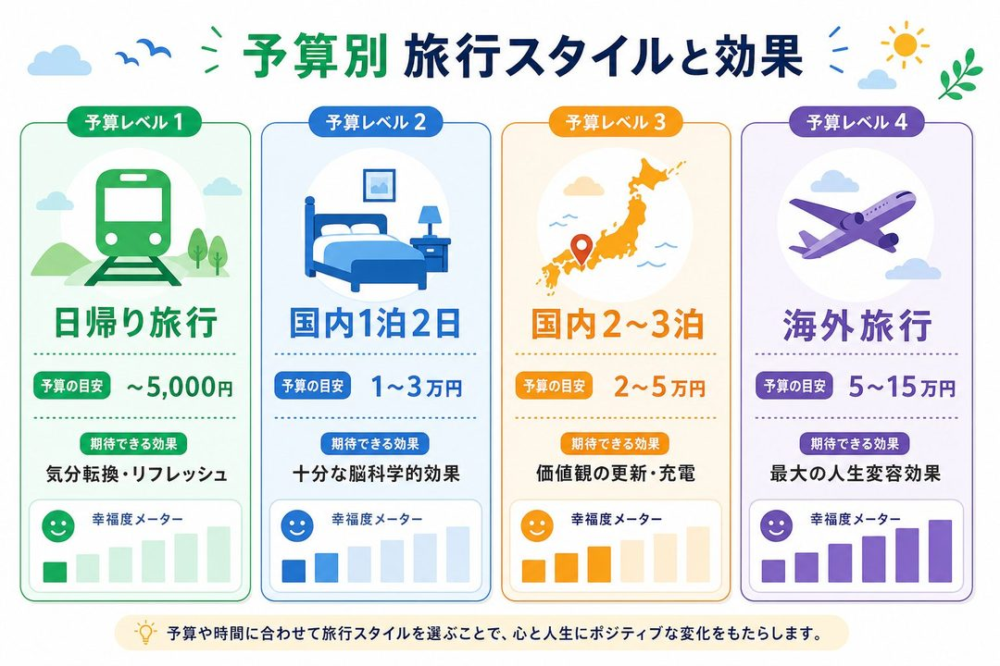
旅行コスト別の選択肢
さらに重要な視点は「機会費用」です。
毎日のランチに800円使うとすると、1ヶ月で1万6000円。
毎週末に1500円のカフェを2回利用すると、1ヶ月で1万2000円。
これらを意識的に「旅行積立」に回すだけで、3〜4ヶ月で国内1泊旅行が実現できる金額が貯まります。
旅行に使うお金は「消費」ではなく「投資」です。
前章で見たように、旅行は人生満足度を高め、幸福感を長期間にわたって持続させます。
日常の細かい支出と比べて、旅行への投資は驚くほど高い「幸福のコスパ」を持っています。
「時間がない」という錯覚を打ち破る
「忙しくて旅行に行く時間がない」。
これは現代人が最もよく使う言い訳のひとつです。
しかし一度立ち止まって考えてみてください。
あなたは1週間に何時間、スマートフォンのSNSを見ていますか。
1ヶ月にどれだけの時間を動画配信サービスの視聴に使っていますか。
人間が1日に行う「時間の使い方」を細かく分析すると、多くの場合、意外なほど多くの時間が「流れるまま」に消費されていることがわかります。
時間がないのではなく、「旅行の優先順位が低い」から時間が生まれないのです。
日本の有給休暇取得率は近年改善されつつありますが、まだ50〜60%程度にとどまっています。
使われていない有給休暇がある人が多い現実があります。
「有給が取れる雰囲気ではない」という職場環境の問題は確かにありますが、まず「旅行のために有給を使う」という意識改革から始める必要があります。
「時間がない」の前後比較
年に一度、旅行の日程を先に決めてしまうという方法が効果的です。
旅行の予定を先にカレンダーに入れておくことで、その期間に向けて仕事の段取りを組むようになります。
「締め切りがあると仕事が速くなる」のと同じ原理です。
旅行の日程を「ご褒美」ではなく「インフラ」として先にスケジュールに組み込む——この発想の転換が、時間の問題を解決する鍵です。
「きっかけがない」という壁を越える
「一人旅は不安」「誰かを誘っても断られそう」「旅行の計画を立てるのが面倒くさい」——こうした「きっかけのなさ」も、旅行の障壁として非常に多く聞かれます。
まず、一人旅の不安について。
現代の旅行環境は、10年前と比べて格段に「一人でも旅しやすく」なっています。
スマートフォンとGoogleマップがあれば、言葉が通じない場所でも大抵なんとかなります。
翻訳アプリは年々精度が上がり、AIアシスタントに相談しながら旅することも今は当たり前です。
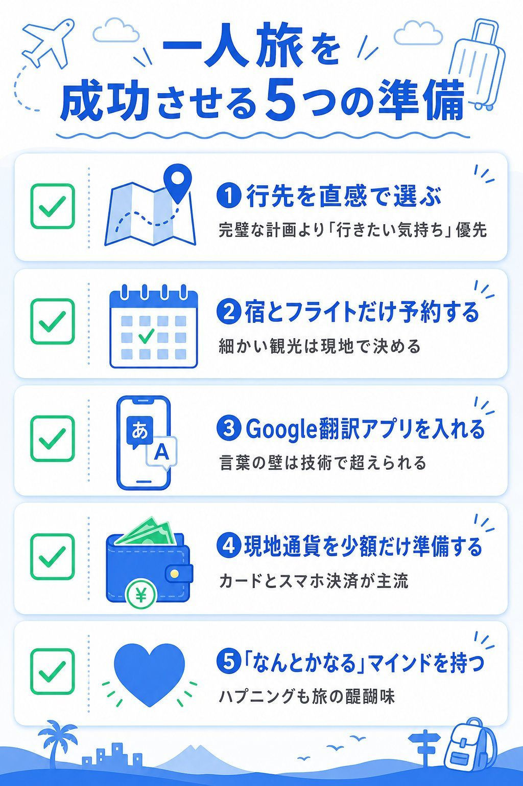
一人旅を成功させる5つの準備
次に、計画が面倒という問題。
実は「完璧な計画」は旅行の天敵です。
すべてをきっちり決めてしまうと、旅行中に予期せぬ出来事を楽しむ余地がなくなります。
「宿とフライトだけ予約して、あとは現地で決める」というスタイルが、実は最もコスパが高く、満足度も高い旅行スタイルだという声が多くの旅行者から聞かれます。
計画の量を最小限にすることで、旅行へのハードルを一気に下げましょう。
「旅行は贅沢」という思い込みを手放す
日本社会には「旅行は特別なご褒美」という固定観念がいまだに強く残っています。
一生懸命働いて、頑張った自分へのご褒美として旅行に行く——確かにそういう旅もあっていいのですが、この考え方だと旅行は永遠に「特別なとき」にしか行けないものになってしまいます。
欧米の先進国では、旅行はライフスタイルの一部として日常に組み込まれています。
年に数回、当たり前のように旅行に出かける。
その間に仕事も人間関係も充電される。
旅行から帰ってくると、以前よりもっと良い仕事ができる。
旅行は人生をリセットし、充電し、新しい視点をもたらします。
それは「贅沢品」ではなく、充実した人生を送るための「必需品」と捉えることが、旅行の優先順位を上げる思考転換の第一歩です。
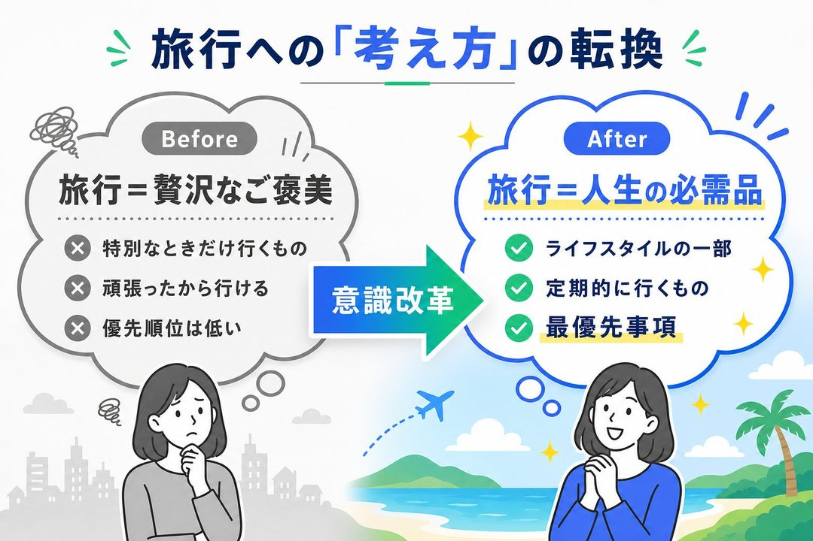
旅行への「考え方」の転換
「旅行に行く余裕はない」ではなく、「旅行に行かない余裕はない」という発想の転換——これが、本書が最も伝えたいことのひとつです。
05第4章 旅行を最優先にする実践戦略
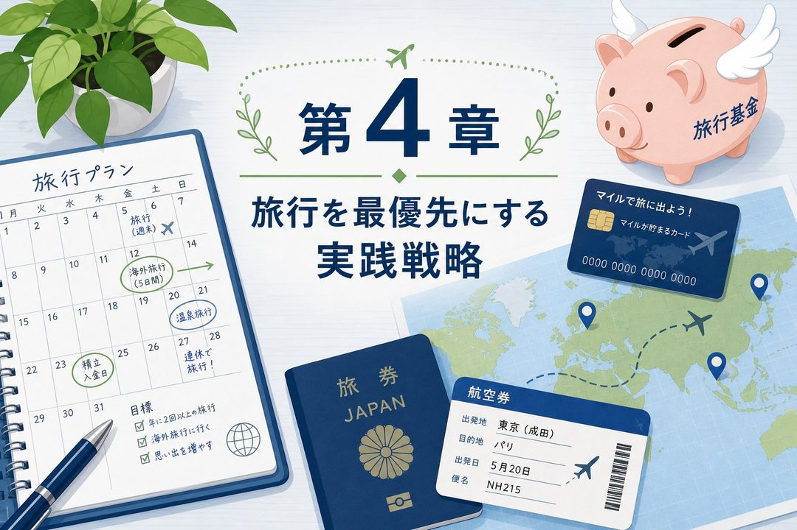
第4章：旅行を最優先にする実践戦略
「旅行最優先」のライフスタイルをデザインする
旅行を優先したいと思っても、何から始めればいいかわからない方に向けて、本章では具体的な実践戦略をお伝えします。
大切なのは「意思力に頼らない仕組みを作る」ことです。
「旅行したい」という気持ちだけでは、日々の忙しさや出費の誘惑に負けてしまいます。
旅行を最優先にするためには、それを支える仕組みと習慣が必要です。
戦略1: 年間旅行計画を1月に立てる
毎年1月に、「今年はどこに行くか」を大まかに決めてしまいましょう。
詳細な計画は後回しでいいのですが、「第2四半期に国内旅行1回、秋に海外旅行1回」くらいの骨格だけは先に決めます。
この「先に枠を確保する」アプローチが非常に重要です。
旅行の予定が先に入っていれば、その期間に向けて仕事の段取りをつけようというモチベーションが生まれます。
逆に「仕事が落ち着いたら旅行に行こう」と考えていると、仕事が「落ち着く」日は永遠に来ません。
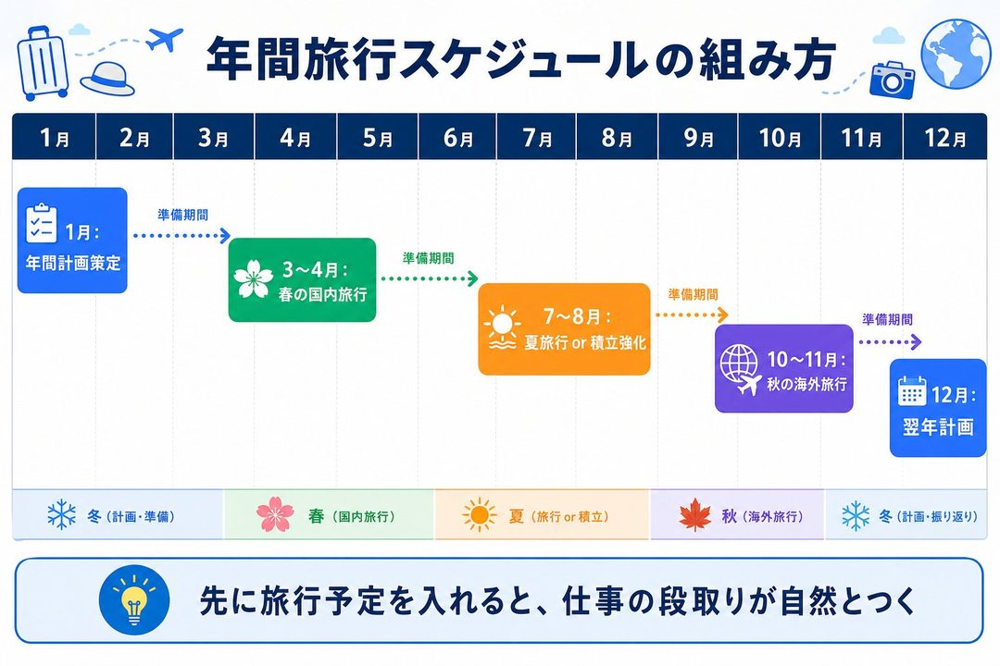
年間旅行スケジュールの立て方
戦略2: 旅行積立を自動化する
旅行費用を「余ったお金で行く」発想から、「先に積み立てるお金」に変えましょう。
最もシンプルな方法は、給与が入った日に自動で「旅行口座」に一定額を移す仕組みを作ることです。
毎月1万円なら年間12万円。
これで年に1〜2回の国内旅行、または2〜3年に1回の海外旅行が実現できます。
毎月3万円なら年間36万円。
これで年1回の海外旅行に余裕で行けます。
大切なのは「自動化」することです。
手動で移していると、「今月は少し使いすぎたからやめておこう」という例外が生まれやすくなります。
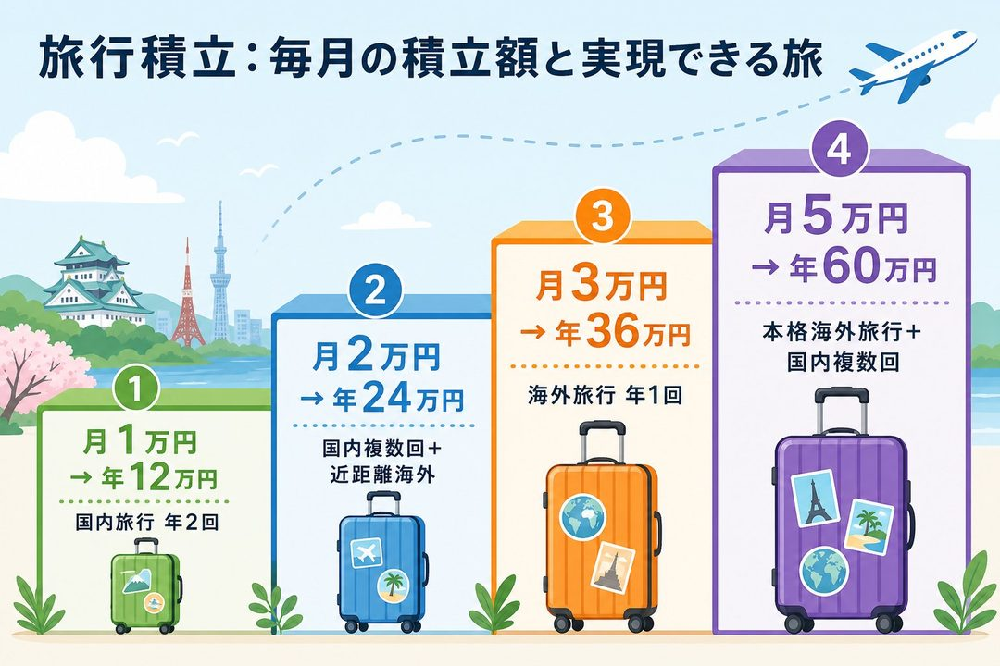
旅行積立ステップ
戦略3: マイルとポイントを旅行に集中投資する
クレジットカードのポイントやマイルを日用品の割引に使っているとしたら、もったいないかもしれません。
すべてのポイントを「旅行」に集中させる戦略を取ることで、旅行費用を大幅に圧縮できます。
航空会社のマイレージプログラムをうまく活用すれば、普段の買い物や出張のたびにマイルが貯まり、年に1回の無料フライトに交換できるケースもあります。
ホテルチェーンのポイントプログラムも同様で、泊まるたびにポイントが貯まり、一定数に達すると無料宿泊に交換できます。
「旅行はお金がかかる」というイメージを変えるために、こうした仕組みを活用することが重要です。
うまく使えば、旅行費用の実質負担を通常の半額以下に抑えることも可能です。
戦略4: まず「小さな旅」から始める
旅行のハードルを感じている人には、まず「小さな旅」から始めることをお勧めします。
住んでいる場所から電車で1〜2時間圏内の場所へ日帰り旅行。
近くの温泉地への1泊旅行。
隣の県の「一度も行ったことがない場所」への週末旅行。
こうした小さな旅の積み重ねが、旅行を「特別なもの」から「ライフスタイルの一部」へと変えていく最初のステップです。
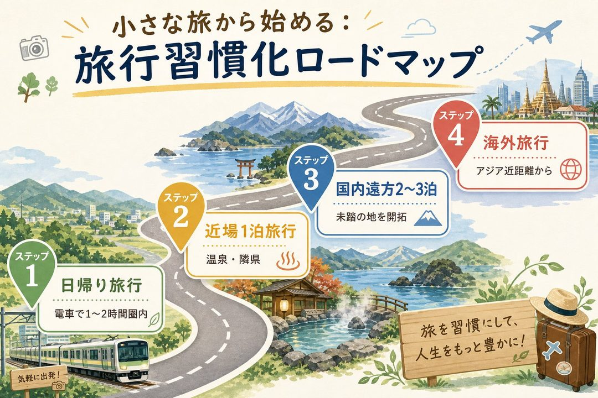
小さな旅から始める旅行習慣化ロードマップ
「旅行は非日常」という感覚が強い人ほど、最初の一歩のハードルが高くなりがちです。
しかし実際に「小さな旅」を経験してみると、「こんなに簡単にできるんだ」という気づきが生まれます。
その気づきが次の旅行への意欲を高め、旅行が習慣化していきます。
旅行前・旅行中・旅行後を最大化する方法
旅行の満足度と幸福への貢献を最大化するためには、旅行前・中・後のそれぞれで意識したいポイントがあります。
旅行前: 期待を高める設計
旅行計画を立てること自体が幸福を高めることは第1章で述べました。
この効果を最大化するために、以下を意識しましょう。
行き先の情報を調べ、楽しみなスポットや食事を具体的にイメージする。
旅行先に関する本を読む、映画を観る。
旅行の話を友人や家族にする——こうした「旅行前の期待作り」が、脳のドーパミン分泌を促進し、出発前から幸福感を高めてくれます。
旅行中: マインドフルに体験する
旅行中は、スマートフォンをなるべく「閉じた状態」で過ごす時間を意識的に作りましょう。
SNSに写真を投稿したり、メールをチェックしたりしながらでは、目の前の体験に集中できません。
マインドフルネス（今この瞬間に集中すること）を実践することで、旅行中の「感動の解像度」が上がります。
風の感触、現地の匂い、人々の笑顔——こうした細部への気づきが増えるほど、旅行の記憶は豊かになり、帰宅後の幸福感も高まります。
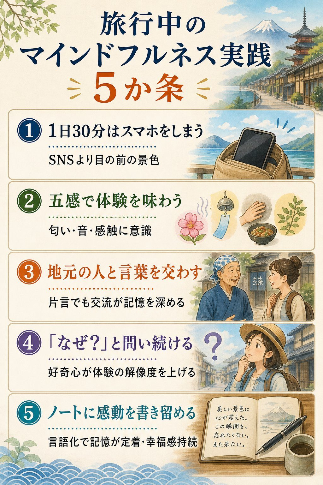
旅行中のマインドフルネス実践5か条
旅行後: 記憶を定着させる
旅行後、体験を誰かに話す、写真を整理してアルバムを作る、旅日記を書く——こうした「振り返りの習慣」が、旅行の幸福効果を長続きさせます。
研究が示すように、「旅行後に体験を共有する」人は人生満足度が高い傾向があります。
体験を言語化することで記憶が整理され、肯定的な感情がより長く保持されます。
年に何回旅行すれば幸福度が最大化されるか
「旅行は回数が多ければ多いほどいい」とは一概に言えませんが、研究からは年に2〜4回程度の旅行が最もバランスよく幸福度を高めることが示唆されています。
頻繁すぎる旅行は、非日常感が薄れ、旅行への期待感（ドーパミン効果）が低下する可能性があります。
逆に年に1回以下では、旅行による幸福の恩恵を十分に受けられません。
年2回を最低ライン、年4回を理想として設定することで、旅行が日常の充電サイクルとして機能するようになります。
- 春と秋に国内旅行（各1〜2泊）
- 夏か冬に海外旅行（5〜7泊）
- プラスアルファで日帰り旅行（月1回程度）
このくらいのペースを目標として設定すると、旅行が「ライフスタイルの一部」として定着していきます。
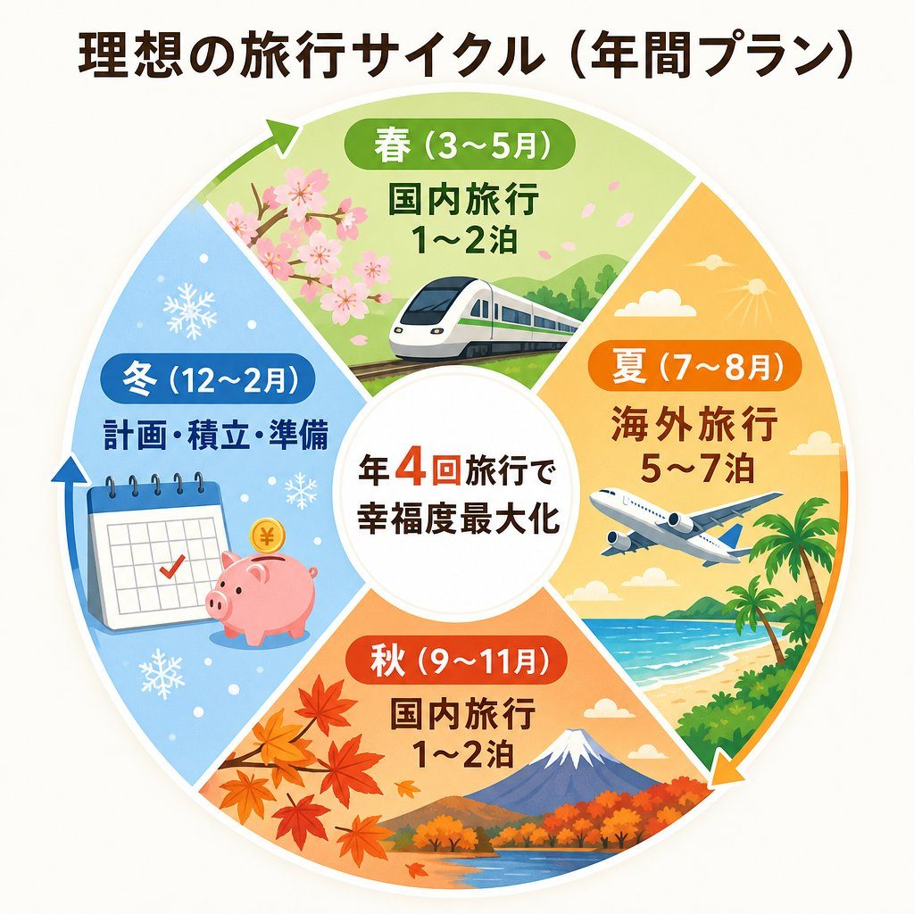
理想の旅行サイクル（年間）
06第5章 旅行が作る「後悔しない人生」
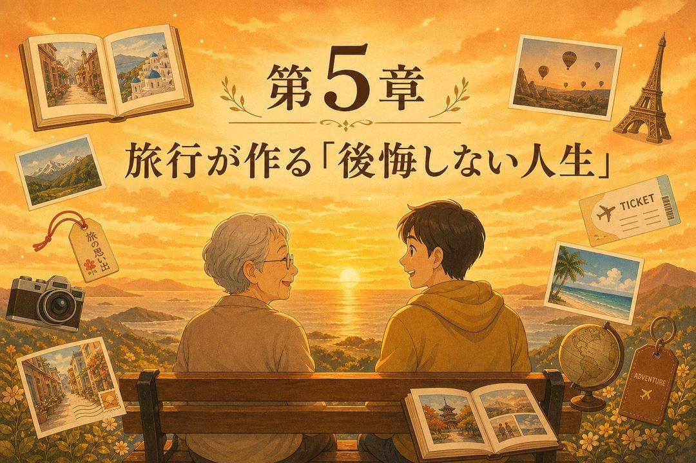
第5章：旅行が作る「後悔しない人生」
人生の終わりに何を後悔するか
緩和ケアの看護師として長年働き、多くの人の「人生の最後」に立ち会ったブロニー・ウェアは、臨終の患者たちが共通して語る後悔を記録しました。
その中でも特に多かったのが「もっと旅をすればよかった」「もっと体験を重視すればよかった」という声でした。
人生の終わりに「もっと仕事をすればよかった」と言う人はほとんどいません。
しかし「もっと旅をしたかった」「もっと人と会いたかった」「もっと新しいことを体験したかった」という後悔は非常に多い。
これは旅行に限った話ではありませんが、旅行はこれらすべての後悔を解消できる体験のひとつです。
旅をすることで、人生の終わりに「やり残した」と感じる要素を一つひとつ消していくことができるのです。
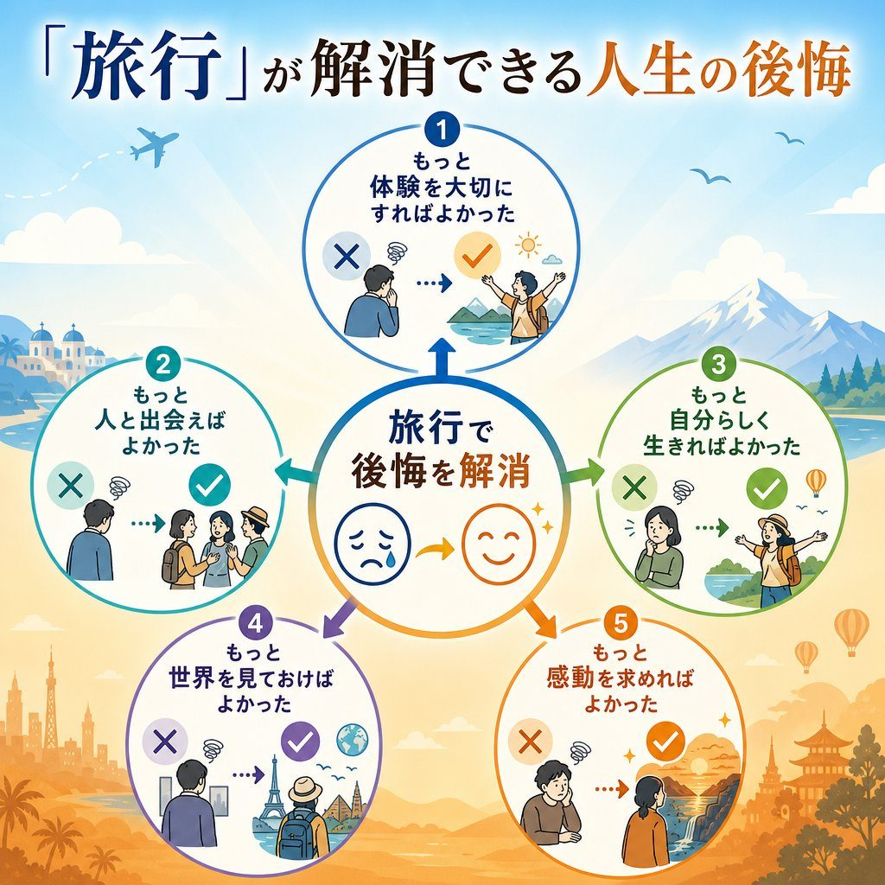
「旅行」が解消する人生の後悔
人生100年時代と旅行の優先順位
現代人の平均寿命は延び続け、「人生100年時代」という言葉が現実のものとなりつつあります。
しかし、旅行を楽しめる健康寿命には限りがあります。
日本人の健康寿命は男性が約72歳、女性が約75歳とされています（2019年時点）。
元気に旅行できる期間は、65歳くらいまでと考える人が多いでしょう。
20歳から65歳までの45年間のうち、何年旅行に積極的に行けるかを考えると、「まだ若いから後でいいや」という感覚がいかに危険かがわかります。
30代は仕事が最も忙しい時期。
40代は子育てと仕事のピークが重なる。
50代は親の介護が始まることも。
60代になると体力的な制約が出てくる——こうやって考えると、「ベストな旅行シーズン」は今この瞬間なのです。
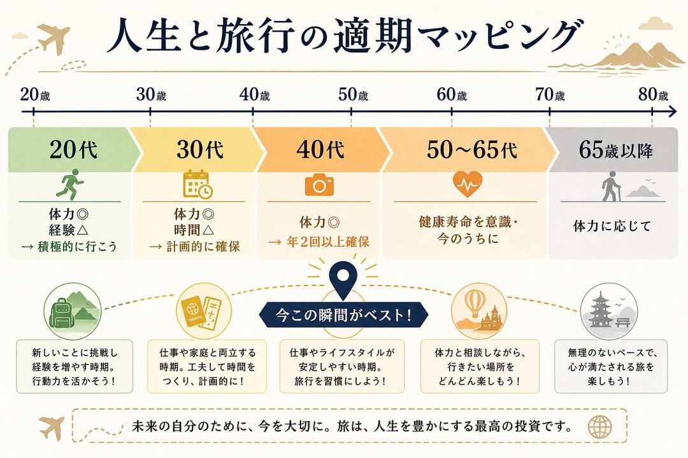
人生と旅行の適期マッピング
**「あとで行こう」のリスクは、時間が経つほど大きくなります。
**
逆に言えば、今から旅行を最優先にする習慣を作ることで、人生を通じて「旅行できた」という豊かな記憶の積み重ねが生まれます。
体験の蓄積が「人生の物語」になる
人間が人生に意味を感じるとき、その多くは「豊かな経験の積み重ね」から来ています。
キャリア、学歴、貯蓄残高——これらも大切ですが、人生の最後に振り返ったとき、最も「生きた証」として感じられるのは「どんな体験をしてきたか」ではないでしょうか。
旅行は、その「体験の蓄積」において最も効率的なもののひとつです。
日常生活では出会えない景色、人、食事、文化——こうした多様な体験が積み重なって、その人の「人生の物語」が豊かになっていきます。
**モノは増えても人生は豊かにならないが、体験は増えるほど人生は豊かになる。
**
これは体験経済の研究者たちが繰り返し強調することです。
消費者の意識は、物質的な豊かさから体験的な豊かさへとシフトしています。
そして旅行は、最も純粋な「体験」の形式のひとつです。
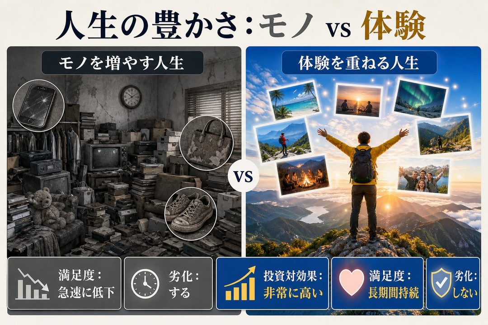
人生の豊かさ：モノ vs 体験
旅行が作る「感謝力」と「生きる力」
世界を旅していると、日本の当たり前がどれほど恵まれているかを実感する機会があります。
ウガンダの小学校教師が月1万円の給与で「幸せだ」と言いながら子どもたちのために全力で働いている姿。
インドの市場でスマイルだけで言葉が通じる体験。
タイの寺院で出会った僧侶の穏やかな言葉。
アフリカの農村で子どもたちが裸足で走り回りながら目を輝かせている場面——こうした体験一つひとつが、「自分はどれほど恵まれているか」という感謝の気持ちを育てます。
感謝の気持ち（グラティチュード）は、ポジティブ心理学において幸福度を高める最も強力な要因のひとつとして知られています。
旅行は、この感謝の感覚を自然に育てる「最高の道場」なのです。
また、旅行中に様々な人と出会うことで、「世界はこんなに広くて多様だ」という視野が広がります。
日常の悩みが相対化され、「これくらいのことは大丈夫だ」という心の余裕が生まれます。
旅行を重ねた人が「包容力がある」「落ち着いている」と言われることが多いのは、この「相対化の力」によるものです。
旅行が職業・創造性・イノベーションをもたらす
旅行の効果は個人の幸福だけにとどまりません。
ビジネスの観点からも、旅行経験は非常に重要な「投資」です。
グローバル化が進む現代において、異文化理解力は最も重要なビジネススキルのひとつとなっています。
海外旅行で培った「異なる文化への適応力」「多様な価値観への理解」「言語の壁を越えてコミュニケーションする力」——これらはビジネスの現場で直接活きてきます。
また、旅行が創造性を高めることは前章でも述べましたが、これはビジネスにおいても非常に価値があります。
新しいビジネスアイデアは、日常の延長線上ではなく、非日常の体験から生まれることが多い。
旅行中に出会った「現地の問題解決の仕方」から事業アイデアが生まれたケース、異国の文化から製品デザインのヒントを得たケースは数えきれないほどあります。
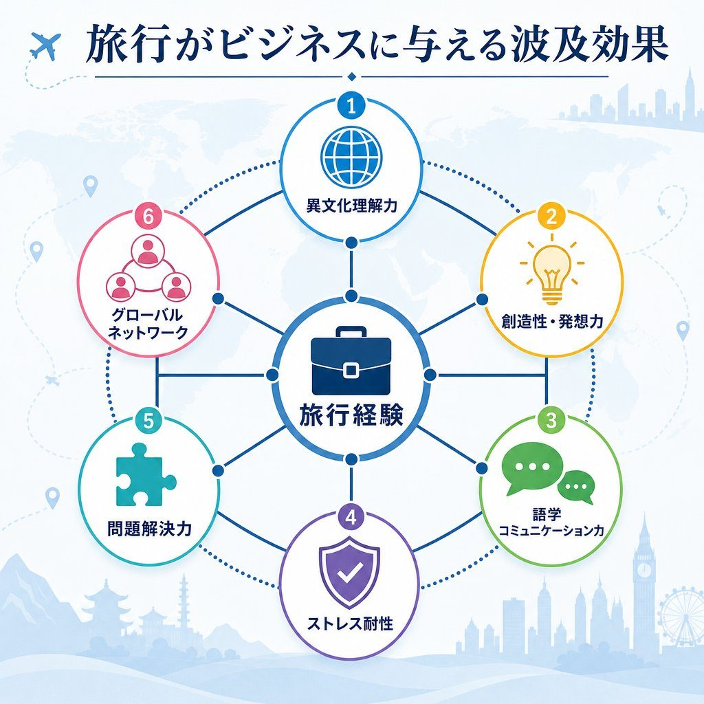
旅行がビジネスに与える波及効果
旅行は単なる「休息」ではなく、ビジネスパーソンとしての能力を高める「研修」でもあるのです。
「旅行する人生」と「しない人生」の10年後の差
最後に、少し想像してみてください。
今から10年後、旅行を続けてきた自分と、旅行を後回しにし続けてきた自分。
どちらが豊かな人生を送っているでしょうか。
旅行を続けた10年後の自分は、さまざまな文化への深い理解を持ち、多様な価値観に柔軟に対応できる人間になっています。
困難な状況でも「なんとかなる」という自信があります。
感謝の気持ちが強く、日常の小さな幸せを感じ取れます。
「生きてきた」という実感のある豊かな記憶を持っています。
旅行を後回しにした10年後の自分は、「いつか行こう」という未消化の夢を抱え続けています。
日常のルーティンに埋もれ、世界の多様性への感覚が薄いかもしれません。
そして「もっと旅をすればよかった」という後悔の芽が、少しずつ育っているかもしれません。
どちらの未来を選ぶかは、今のあなたの選択にかかっています。
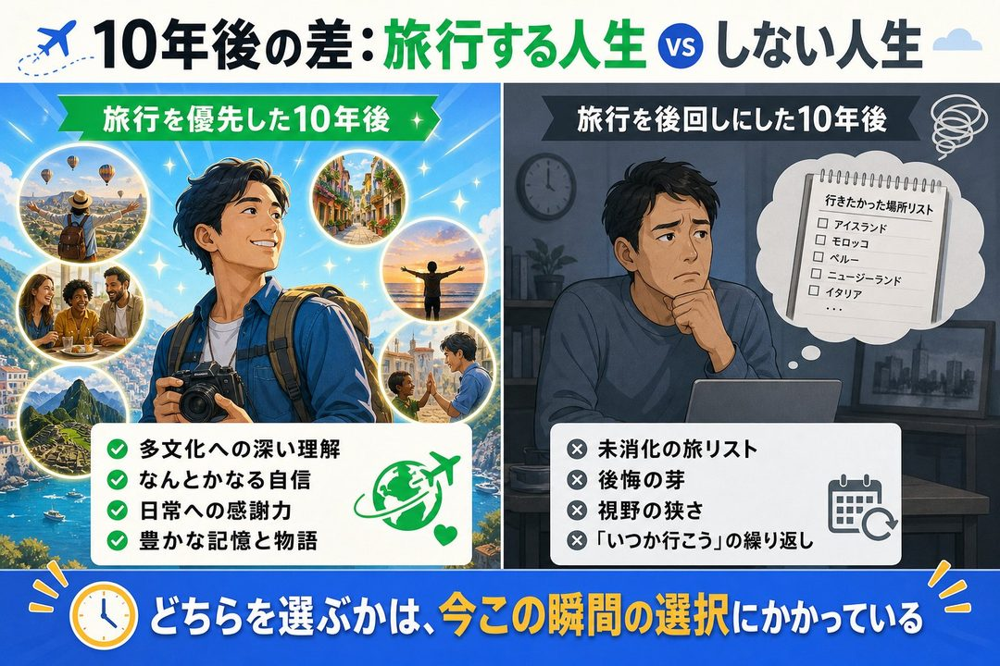
旅行する人生 vs しない人生（10年後の差）
07おわりに
本書を読んでくださり、ありがとうございます。
科学が示す旅行の力——幸福度の向上、脳の活性化、価値観の拡張、創造性の解放——これらを知ったうえで、旅行への見方が少し変わったとしたら、この本を書いた意味があります。
旅行は贅沢品でも、特別なご褒美でもありません。
充実した人生を送るための、必要不可欠な投資です。
「いつか行こう」という言葉が口をつくたびに、思い出してください。
「いつか」は来ません。
来るのは「今」だけです。
今すぐできることがあります。
旅行の計画を立てることです。
行き先を調べ始めることです。
旅行口座を作ることです。
有給休暇の申請を出すことです。
「来月、近場に日帰り旅行に行こう」と決めることです。
どんなに小さな一歩でもかまいません。
**旅行を最優先にする人生は、その一歩から始まります。
**
韓国の漢陽大学の研究が示すように、旅行経験者と非経験者の幸福度の差は明確に存在します。
オランダの研究が示すように、旅行の計画を立てた瞬間から幸福感は高まります。
ポジティブ心理学が示すように、旅行がもたらす「ユーダイモニア的幸福」は長期的な人生満足度を支えます。
あなたが旅行に行くたびに、脳が活性化され、価値観が広がり、感謝の気持ちが育まれ、豊かな記憶が積み重なっていきます。
そしてその積み重ねが、10年後、20年後の「後悔しない人生」を作るのです。
さあ、本を閉じたら、まず行き先を1つ決めてみてください。
**あなたの旅は、今この瞬間から始まっています。
**
*本書が、あなたの「いつか」を「今」に変えるきっかけになることを願っています。
*
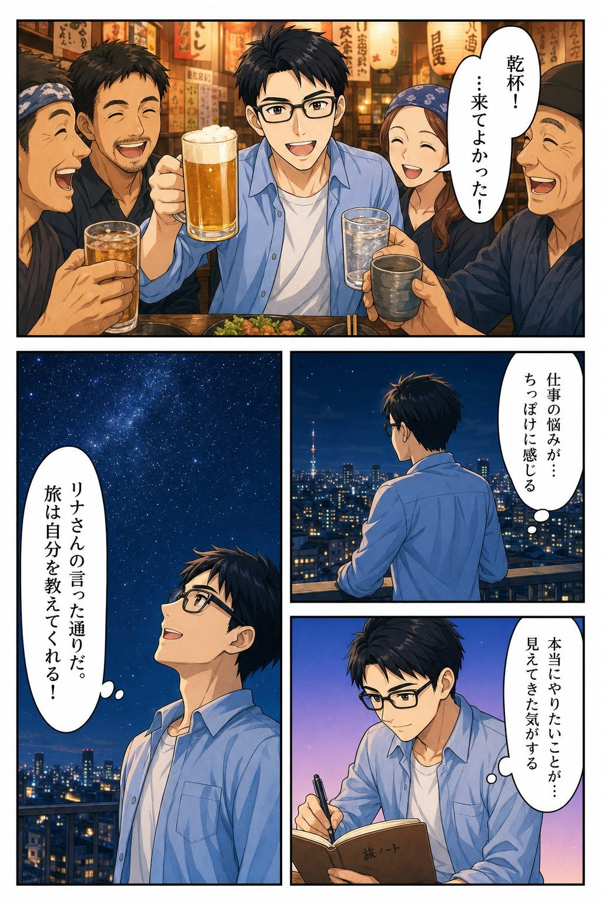
© 竹谷知悦 / 特別プレゼント版